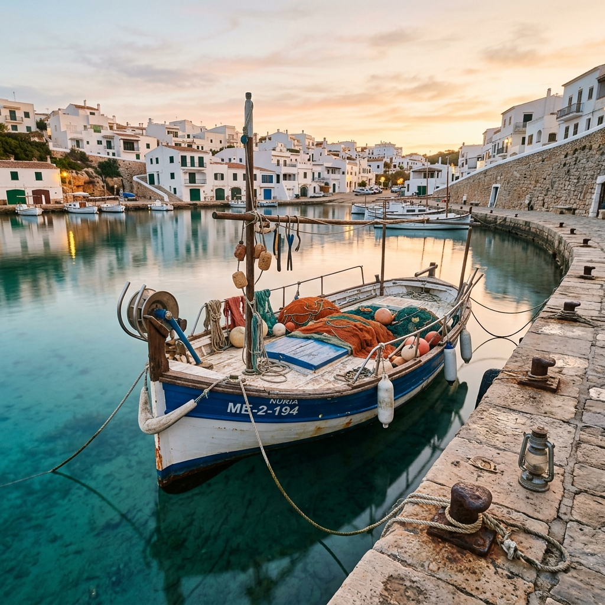
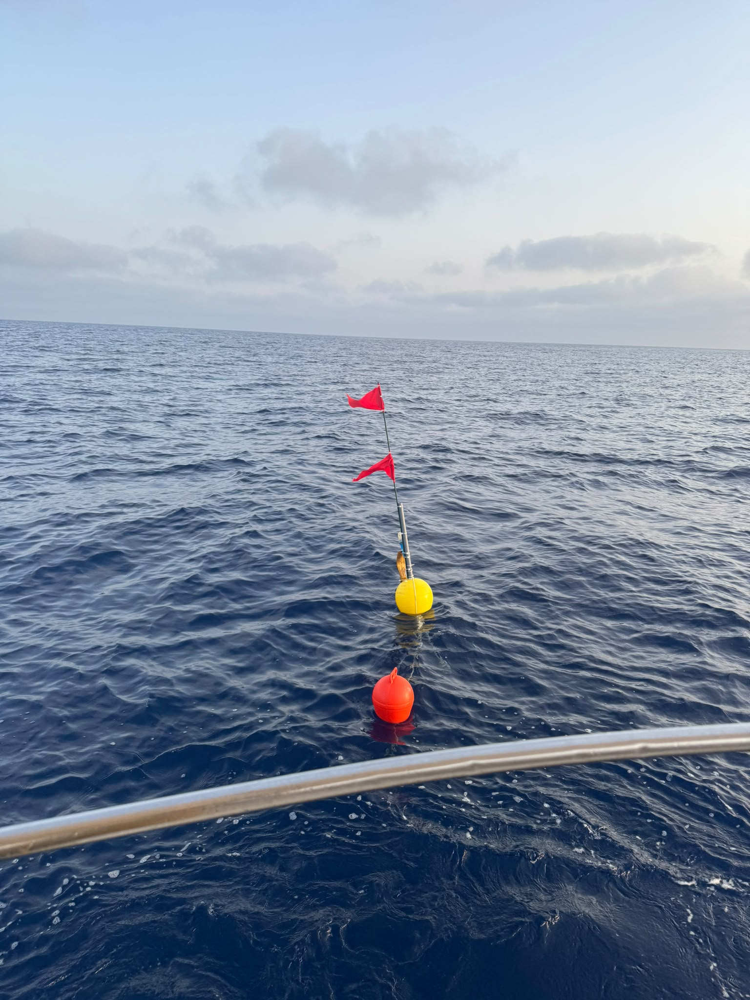
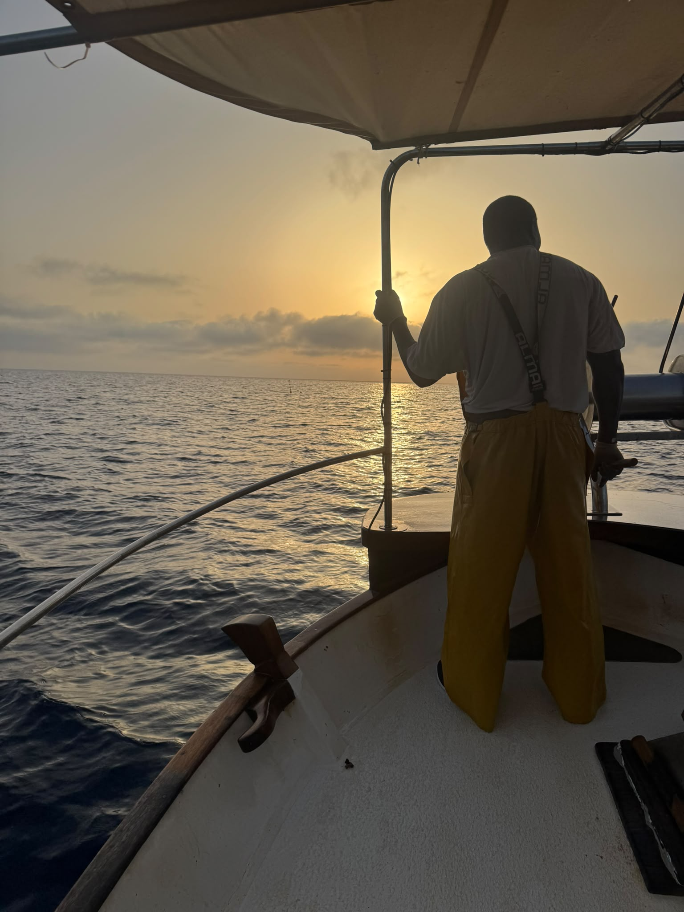

Sales al mar con pescadores artesanales menorquines. No es una recreación: es nuestro trabajo, y te lo enseñamos.
Pescaturismo es la actividad regulada que permite a un visitante acompañar a un barco de pesca artesanal durante su jornada de trabajo.
En nuestro caso, no hay escenificación: pescamos como pescamos siempre, y tú vienes con nosotros.
Es una manera de conocer Menorca por el oficio que la ha alimentado durante siglos, y de hacerlo en compañía de quienes han elegido seguir haciéndolo así hoy.

Dos formas distintas de entrar al mismo oficio. Una al amanecer, con la pesca real. Otra al atardecer, con demostración y explicación.

Salida antes del amanecer, recogida de redes, vuelta a puerto con la captura. Es el trabajo de cada día — y tú lo vives con nosotros.
por persona · temporada
Reservar mañana
Salida al atardecer con demostración de técnicas de pesca artesanal menorquina, explicación del oficio, vuelta al anochecer. Un primer contacto con el mar.
por persona · temporada
Reservar tardeSoy Jose, pescador artesanal con base en Es Castell. Pesco como aprendí a pescar: con respeto al mar y al tiempo que pide. He elegido seguir haciéndolo así, hoy, sabiendo lo que cuesta y lo que vale.
Contamos con tres embarcaciones, una de ellas con licencia oficial de pescaturismo — una autorización que ya no se concede. Cuando sales conmigo, sales a pescar de verdad: con las mismas herramientas, los mismos horarios y las mismas incertidumbres que cualquier otro día.
Pescar artesanalmente en Menorca hoy es una decisión. La tomo porque hay algo en este oficio que merece la pena sostener: la constancia, el esfuerzo, el respeto al mar y a quien viene detrás.
Esta marca nace en Es Castell y se piensa desde aquí. Me importa que en Menorca volvamos a comer pescado de Menorca — y no salmón de fuera por costumbre. Me importa que los chavales que vienen al mar conmigo aprendan algo real, no una postal.
Si vienes a una salida, vienes a esto. No a una recreación: a un oficio en activo, con su tiempo y su gente.
Todo lo que necesitas saber antes de subir a bordo. Operamos con toda la documentación en regla y te damos toda la información por adelantado.
Condiciones y coberturas del seguro de pasajeros que cubre cada salida.
Cada embarcación cuenta con un seguro de RC en vigor que cubre todas las salidas.
Seguro específico para pasajeros contratado y vigente, con cobertura de accidentes.
Las condiciones exactas de la póliza se confirmarán con la aseguradora. Las detallaremos aquí próximamente.
Instrucciones prácticas que recibirás antes de cada salida. Todos los pasajeros deben conocerlas.
Cada pasajero debe llevar puesto el chaleco salvavidas durante toda la salida. Proporcionamos uno de la talla adecuada. Disponemos de chalecos infantiles a bordo. Plazas para menores limitadas por este motivo y en proceso de ampliación.
La embarcación dispone de bengalas, extintores y equipo de comunicación. El patrón explica dónde están y cómo se usan.
Antes de salir del puerto, el patrón realiza una explicación de seguridad: zonas de paso, cómo moverse a bordo y qué hacer en caso de emergencia.
El listado completo de normas a bordo se cerrará con el armador. Lo actualizaremos aquí antes de la primera salida.
Toda la documentación que acredita que nuestra actividad turística es legal y está regulada.
Operamos con la autorización correspondiente para pescaturismo bajo la normativa balear y estatal vigente.
Tres barcos con documentación al día y revisiones técnicas en regla.
Patrones con titulación profesional en vigor para el transporte de pasajeros.
Máximo de pasajeros por embarcación según normativa, para garantizar comodidad y seguridad.
Quienes ya han salido al mar con nosotros lo cuentan mejor que cualquier folleto.
"Una experiencia auténtica. Ver el amanecer desde la barca y aprender cómo se pesca de verdad en Menorca no tiene precio. Los pescadores son increíbles — se nota que aman lo que hacen."
"Fuimos con los niños a la salida de tarde y fue perfecto. Les explicaron todo con paciencia, vieron las redes de cerca y aprendieron mucho sobre el mar. Muy recomendable para familias."
"Hemos probado varias actividades en Menorca, pero esta fue la más auténtica con diferencia. Nada de turismo de escaparate: sales con pescadores de verdad, a pescar de verdad."
Elige la que mejor encaje contigo.
La salida auténtica
por persona · temporada
Atardecer en el mar
por persona · temporada
Consulta las fechas con salidas disponibles y selecciona la que mejor te venga.
Selecciona un día en el calendario de arriba o rellena el formulario directamente. Tras enviar, pasarás a la pasarela de pago segura.
Frente a la lonja
Muelle
Es Castell
El puerto del día se confirma 24 horas antes según la meteorología. Te avisamos por email y teléfono.